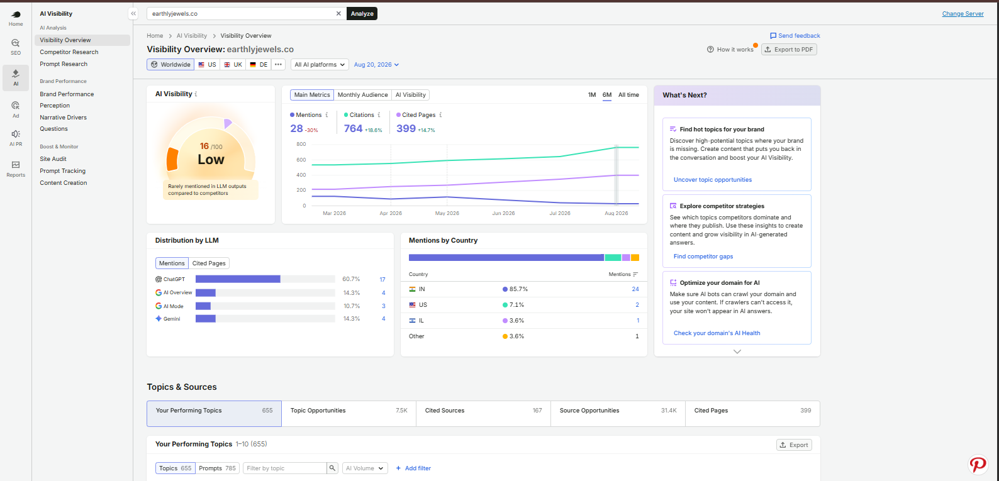
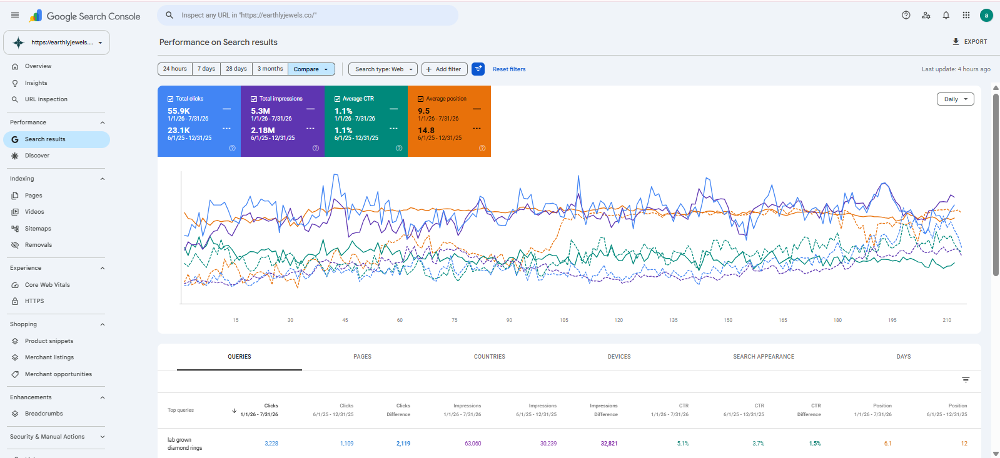
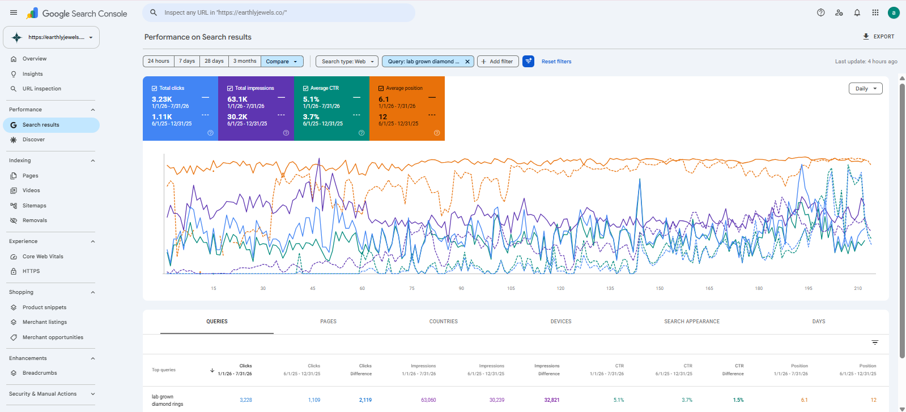
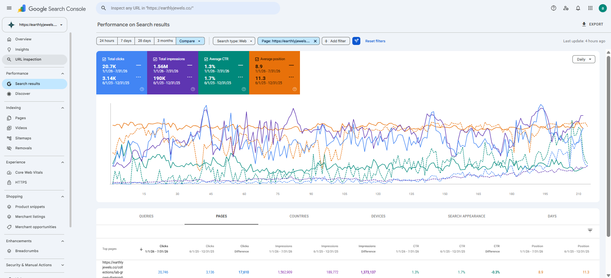
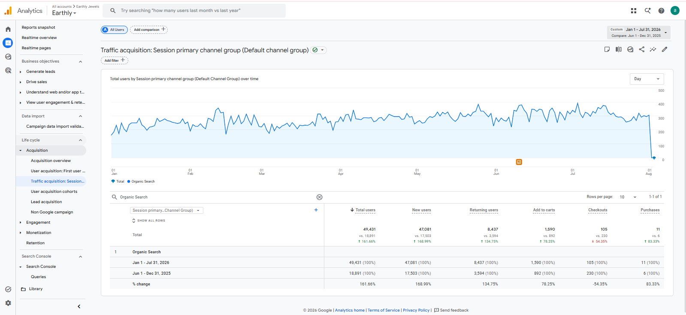

The Starting Point
Earthly Jewels was not starting from zero. The website already had organic visibility, regular content publishing, an established social presence, and a growing product catalogue. The problem was that SEO was not yet working as one connected system. Keyword research was limited, and pages were often created or updated without clear search intent. Several collection pages contained very little useful search-focused content, while many product descriptions followed similar patterns. Blogs were being published two to three times per week, but topic selection was not consistently driven by keyword opportunity or commercial relevance. Internal linking was extremely limited, technical and mobile-performance issues remained, some important pages were struggling with indexing, and the backlink profile contained a mixture of useful links and low-quality placements. The challenge therefore was not simply to publish more content or build more backlinks. Earthly Jewels needed a more structured SEO strategy connecting:
The Initial SEO Problems
My audit identified opportunities across almost every major part of the website.
Technical SEO
The main technical concerns included:
- Mobile Core Web Vitals and page-speed issues
- Product and blog pages appearing under Crawled – currently not indexed
- Pages appearing under Discovered – currently not indexed
- Limited structured data beyond Shopify defaults
- Heading hierarchy issues
- Sitemap and robots.txt areas requiring review
- Favicon visibility problems
- Important updated pages requiring better indexing support
Several indexing problems were also connected to page quality rather than being purely technical.
On-Page SEO
The website lacked a consistent page-level optimization process. Common issues included:
- Weak keyword targeting
- Thin collection content
- Similar product descriptions
- Generic meta titles and descriptions
- Inconsistent heading hierarchy
- URLs that were not always optimized
- Limited image alt-text optimization
- Very little internal linking
- Weak differentiation between similar products
This made it harder for search engines to clearly understand which pages should rank for which searches.
Content
Earthly Jewels was already publishing approximately two to three blogs per week. The publishing frequency was not the problem. The missing element was strategy. Many topics were not selected through strong keyword research and did not effectively support important collections or product categories. The website did not simply need more articles. It needed content with a clear SEO and business purpose.
Off-Page SEO
Earthly Jewels already had backlinks, including some naturally earned links. However, backlink quality was inconsistent. The profile also included links from low-quality and PBN-style websites, and anchor-text planning was limited. Many links simply used the homepage URL rather than a more deliberate contextual strategy. The objective was therefore not just to build more backlinks. It was to create a cleaner and more relevant off-page profile.
My Role
I led SEO strategy and execution for Earthly Jewels. My responsibilities included:
- SEO strategy and prioritization
- On-page SEO audits
- Technical SEO audits
- Keyword research
- Keyword mapping
- Competitor research
- Collection-page SEO
- Product-page SEO
- Blog strategy
- Content planning
- Internal linking
- Backlink strategy
- Local SEO
- AI search optimization
- Performance reporting
- Team coordination
- SEO approvals
I worked alongside a Shopify developer, a junior SEO/content executive, and a designer. I owned the SEO project from strategy through execution, coordination, monitoring, and ongoing optimization.
Starting With a Complete SEO Audit
Before making large changes, I first wanted to understand where the strongest opportunities actually existed. I performed an on-page and technical audit using Screaming Frog, then combined that with competitor and backlink research using Semrush and Ubersuggest. Google Search Console and Google Analytics were used to understand:
- Existing clicks
- Existing impressions
- Ranking queries
- Page-level performance
- Indexing issues
- Pages already showing search potential
The audit highlighted several major priorities:
- Weak keyword targeting
- Poor heading hierarchy
- Limited internal linking
- Thin collection and product content
- Weak blog-topic selection
- Mobile performance problems
- Low-quality backlinks
- Indexing issues
- Limited structured data
Instead of changing everything at once, I prioritized the areas most likely to improve organic visibility.
Building the Keyword Strategy
Earthly Jewels previously did not have a structured keyword-research process. I started with one of the most useful data sources available: Queries the website was already receiving impressions and clicks for in Google Search Console. From there, I combined:
- Google Search Console data
- Search volume
- Keyword competition
- Search intent
- Competitor rankings
- Product relevance
- Collection relevance
Competitor research included jewellery brands such as:
- Jewelbox
- Limelight Diamonds
- Emori
- House of Quadri
- Carat Bazaar
- Fiona Diamonds
The objective was to identify where Earthly Jewels already had momentum and where new opportunities existed.
Mapping Keywords Across the Website
The jewellery catalogue contained many products with similar designs. That created a natural risk of multiple pages targeting the same searches. Instead of assigning identical keywords across similar products, I mapped different primary, secondary, and long-tail keyword variations to relevant pages. The keyword framework then guided:
- Collection content
- Product descriptions
- Metadata
- Headings
- Blog topics
- Internal links
- Future content planning
This helped reduce unnecessary keyword cannibalization while expanding the number of relevant searches the website could target.
Strengthening Collection Pages
Collection pages became one of the biggest priorities. Many originally functioned primarily as product grids with little meaningful SEO content. For important collections, I worked on:
- Keyword-focused collection content
- H1, H2, and H3 structure
- Meta titles
- Meta descriptions
- Structured data
- Internal linking
- Supporting blog content
- Crawl paths
- Indexing of selected updated URLs
Competitor analysis had shown that strong jewellery websites treated collection pages as commercial search landing pages rather than simply catalogue listings. Earthly Jewels began following the same principle while building each collection around its own keyword opportunity. The current lab-grown diamond rings collection, for example, now combines a substantial product catalogue with explanatory content, buying context, brand reasons, and FAQs rather than existing only as a product grid.
Improving Product Page SEO
Product pages required a more granular approach. Many jewellery designs naturally shared similar characteristics, which made page differentiation important. I worked on:
- Product titles
- H1 optimization
- Product descriptions
- Keyword targeting
- Image alt text
- Meta titles
- Meta descriptions
- Internal linking
- Structured data
- Content quality
Different keyword variations were assigned across similar products to reduce overlap and expand the catalogue's search footprint. This allowed collection pages to focus on broader commercial terms while individual products targeted more specific searches.
Transforming the Blog Strategy
Earthly Jewels was already publishing regularly. I changed the focus from publishing frequency toward search opportunity. Blog planning began using:
- Google Search Console data
- Keyword clusters
- Competitor performance
- Search intent
- Commercial-page opportunities
- Existing impressions
- Content relevance
During the project: 40 new blogs were published and 25 existing blogs were updated
Updating Existing Content
I did not automatically rewrite every existing article. Older blogs were evaluated according to their existing search potential. Blogs already receiving impressions were often prioritized because Google was already testing those pages in search. Updates focused on:
- Better keyword targeting
- Improved content quality
- Stronger headings
- Internal links
- Relevant commercial connections
- Better search intent alignment
This allowed existing pages with momentum to become stronger assets rather than always creating another URL.
Building Content Around Commercial Pages
New content included:
- Informational articles
- Collection-focused topics
- Trend-based content
- Commercial list posts
- Product-supporting content
Every article needed a purpose beyond generating traffic.
Where relevant, blogs connected users and search engines toward:
Some of the strongest growth during the project came from combining:
Building a Strong Internal Linking Structure
Internal linking had been one of the most underused SEO opportunities on the website.
I developed a clearer linking model.
Product Pages
Homepage
Collection Pages
Blogs
Relevant contextual anchor text was used where it naturally fit instead of relying only on generic phrases.
This helped search engines discover deeper pages while also strengthening relationships between informational and commercial content.
Improving Technical SEO
Technical SEO focused on improving discoverability, page understanding, performance, and user experience.
Key improvements included:
- Relevant structured data implementation
- Heading hierarchy fixes
- Mobile page-speed improvements
- Core Web Vitals improvements
- Favicon visibility fixes
- Sitemap reviews
- Robots.txt reviews
- Structured data validation
- Indexing improvements
- Manual indexing of selected important URLs
One of the more difficult issues involved product and blog pages appearing as:
- Crawled – currently not indexed
- Discovered – currently not indexed
Rather than treating these only as Search Console errors, I improved the underlying pages.
The strategy included:
- Better content
- Stronger keyword relevance
- More internal links
- Clearer page relationships
- Better technical signals
- Manual indexing where appropriate
Mobile performance also required substantial coordination and research with the Shopify development team.
Improving Indexing
Indexing improvement became a combination of technical SEO and page quality.
Instead of repeatedly submitting weak pages to Google, I worked on making the pages more useful and easier to discover first.
That meant:
This reinforced one of the broader lessons from the project:
Some indexing problems that look technical are actually content and internal-linking problems underneath.
Improving Off-Page SEO
Earthly Jewels already had an existing backlink profile, but the quality was inconsistent. I audited the profile and reviewed questionable domains, including low-quality and PBN-style placements. The objective was to improve the profile rather than simply increase its size. During the project, I also built approximately:
20 New Backlinks
primarily through relevant guest-post opportunities. Anchor-text selection became more deliberate instead of repeatedly relying on the homepage URL. The broader goal was:
Improving Local SEO
Earthly Jewels also had a physical local presence in Mumbai.
Its Google Business Profile existed but was not being maintained consistently.
I introduced regular profile updates and supported local search visibility with Mumbai-focused content.
Over time, Earthly Jewels began appearing for locally relevant searches including:
- Lab Grown Diamond Jewellery Shop in Mumbai
- Lab Grown Diamond Jewellery Shop in Andheri Mumbai
This connected the ecommerce brand with users searching for high-intent local jewellery options.
The live site currently lists its Andheri West, Mumbai location and includes a Store Locator, reinforcing that online + local relationship.
Preparing Earthly Jewels for AI Search
The SEO strategy also expanded beyond traditional search results. I worked on making Earthly Jewels content easier for AI-driven systems to interpret and reference. This included:
- Relevant structured data
- FAQ sections
- Clearer content sections
- More informative content
- Better brand mentions
- Citations
- Stronger relationships between topics and pages
According to Semrush AI visibility reporting, Earthly Jewels later recorded: 28 AI mentions 764 AI citations 399 cited pages These are third-party AI visibility figures rather than Google Search Console measurements.

Overall SEO Results
Comparing the latest seven-month period with the previous seven months in Google Search Console:
Organic Clicks
23.1K → 55.9K Increase: +32.8K clicks Growth: +142% Organic clicks grew to approximately 2.4× the previous level.
Search Impressions
2.18M → 5.3M Increase: +3.12 million impressions Growth: +143% Search visibility grew to approximately 2.4× the previous level.
Average Position
14.8 → 9.5 Improvement: 5.3 positions At a site-wide level, average search position moved from page-two territory into page-one territory.

Keyword Growth Example
One of the strongest commercial keywords was:
“lab grown diamond rings”
Clicks
1,109 → 3,228
Impressions
30,239 → 63,060
Average Position
12 → 6.1 The keyword moved from page-two territory into a much stronger page-one position while clicks nearly tripled.

Collection Page Growth
One of the strongest commercial-page examples was the:
Lab Grown Diamond Rings Collection
Before
3,136 clicks 189,772 impressions 11.3 average position
After
20,746 clicks 1,562,909 impressions 8.9 average position
Increase
+17,610 clicks +1,373,137 impressions This became one of the clearest examples of how: Keyword Targeting + Collection Content + Internal Linking + Ongoing Optimization could work together.

New Pages Gaining Search Visibility
Organic growth was not limited to one keyword or collection. Multiple pages that previously had little or no meaningful visibility began appearing for searches around:
- Marquise diamonds
- 1 carat lab-grown diamond pricing in India
- Women's jewellery trends
- Vanki jewellery
- Yellow diamond men's rings
- Vanki ring designs
- Cushion-cut engagement rings
- Princess diamond tennis bracelets
- Heart-shaped solitaire necklaces
This showed that visibility was expanding across:
Business Impact
Organic visibility was not the only area that improved. The SEO work also supported broader business performance. However, sales and conversion figures are confidential and are intentionally not included in this portfolio.
Proof of Work
The portfolio version can place direct evidence beside the claims it supports.
Overall Organic Growth
GSC Screenshot 23.1K → 55.9K clicks 2.18M → 5.3M impressions 14.8 → 9.5 average position
Keyword Performance
GSC Screenshot “lab grown diamond rings” 1,109 → 3,228 clicks Position 12 → 6.1
Collection Performance
GSC Screenshot Lab Grown Diamond Rings collection 3,136 → 20,746 clicks
Organic Traffic
GA4 Screenshot Organic traffic trend during the project period
AI Search Visibility
Semrush AI Visibility Screenshot Third-party AI citation and prompt visibility This makes the major performance claims directly verifiable instead of grouping unrelated screenshots into one gallery.

Tools & Platforms Used
- Google Search Console
- Google Analytics
- Semrush
- Ubersuggest
- Screaming Frog
- PageSpeed Insights
- Google Rich Results Test
- Ahrefs
- SEO Meta in 1 Click
- Shopify
The Most Difficult Part
One of the most difficult parts of the project was improving the website as a connected ecommerce SEO system rather than treating each problem independently. Collection pages needed stronger content. Products needed different keyword targets. Blogs needed better search intent. Internal linking needed to connect those assets. Indexing problems required both technical and content improvements. Mobile performance required developer coordination. The backlink profile needed quality control. None of these areas could create the strongest result in isolation. The challenge was making them support the same SEO strategy.
What I Learned
One of the biggest lessons from Earthly Jewels was that some of the most effective SEO practices are also among the easiest to underestimate. Consistently improving existing content and building relevant internal links produced more value than simply publishing more pages. The project reinforced a principle I continue to follow: Classic SEO fundamentals still work when they are applied strategically, consistently, and with attention to quality. Technical SEO alone was not enough. Content alone was not enough. Backlinks alone were not enough. The strongest improvements came from making those areas reinforce each other.
My Biggest Takeaway
Earthly Jewels became a strong example of what happens when SEO stops being a collection of isolated tasks and starts working as one connected system. Keyword research informed the content. Content supported collections and products. Internal links connected those pages. Technical SEO improved accessibility and understanding. Backlinks and Local SEO strengthened visibility outside the website. Reporting showed what was working and where the next opportunity existed. For me, this project demonstrates the kind of responsibility I am comfortable taking on: Owning an SEO project end to end, identifying the biggest opportunities, coordinating the team, executing the strategy, and continuously improving it based on performance.